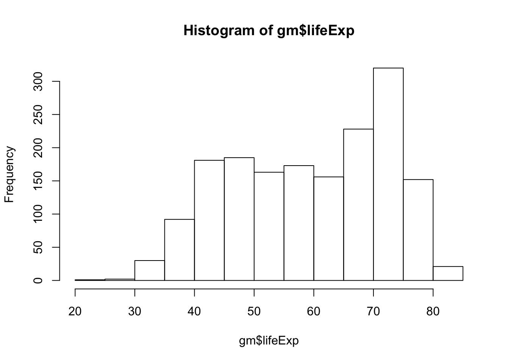
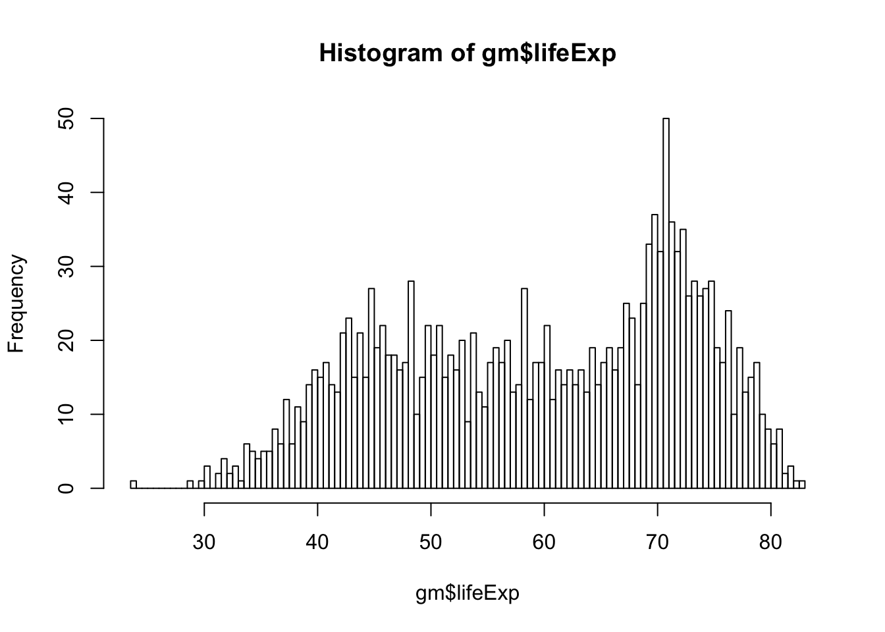

Chapter 1 Introduction to R and RStudio
R is the underlying statistical computing environment. You can think of this like the engine of a car. That makes RStudio like the dashboard.


RStudio is an integrated development environment (IDE) that allows us to interact with R. RStudio sits on top of R and makes writing and executing R code a lot easier. We’ll be benefiting from many of the added features that come with RStudio and we will point them out as we go.
1.1 Panes in RStudio
When you open RStudio, you will have access to R (there is no need to open R directly).
Now go to the top menu to open a new R Script File –> New File –> R Script
Great! Now you will see four panes
- I have mine set up as follows:
- Editor / script / source in the top left
- Console bottom left
- Environment/history on the top right
- Plots/help on the bottom right

Four pane layout in RStudio
On the top left is the script or editor window. This is where we are going to write all of our code.
On the lower left we have the console window. This is where R is running, and this is what you would see if you opened R instead of RStudio. In this pane we can see the code we send and then the answer.
The top right has the environment and history tabs. The Environment is a list of all objects that are saved in memory. The History tab shows all commands that have been run.
On the bottom right hand side there’s a window with Files … that’s your file structure in the working directory … Plots (SHOW PLOTS) … this is where your visualizations will appear … Packages (SHOW PACKAGES) … these are all of the installed packages …checked are loaded. unchecked aren’t … Help (show help) … help files are very important in R, you’ll spend a lot of time here … and Viewer for viewing other kinds of output, like web content
To change your preferences for the pane layout go to Tools –> Global Options –> Pane Layout. The Global Options menu is also where you can change the font size, background color, and other useful preferences.
There is one preference that we recommend you change right now. That is the soft wrap feature that will wrap long lines of code or comments onto several lines so that you do not need to scroll right to see the whole code or sentence. Go to Tools –> Global Options –> Code and click the box next to Soft Wrap R Source files
1.2 Set up an R Project
I mentioned previously that RStudio has a lot of pretty handy features. One of those is the project structure
Before we can start writing code we need to set up a project so that the data and our codes will be in the same place. Go to File –> New Project–> New Directory. I will name mine IntroR and it will be a folder on my desktop

New R Project
Now we have opened up a new instance of RStudio running inside the IntroR folder. Notice on the top of the console pane and the Files pane (bottom right) that the path to the IntroR folder is specified.
When we start reading in data it will be important that the code and the data are in the same place. Creating a project creates an Rproj file that runs R in that folder. If you are familiar with working directories, this process is setting the working directory for this project as this folder.
Once you have a project set up, when you want to read in dataset whatever.txt, you will be able to easily specify the path pointing to whatever.txt rather than having to specify a full path. This is critical for reproducibility, and we’ll talk about that more later.
To get things arranged for later, please download the dataset we are going to use. Right click –> Save link as to download the file to your computer.
Move the dataset to your IntroR directory in a subfolder called data.
File structure
Now that we have a project directory and the dataset inside that project directory, let’s open up a new script and begin coding! Go to File –> New –> New R Script
Code that you type into the console is code that R executes. From here forward we will use the editor window to write a script that we can save to a file and run it again whenever we want to. We usually give it a .R extension, but it’s just a plain text file so it can be opened by any text editor program.
1.3 R as a calculator
R can be used as a calculator. Make sure you’re typing into into the editor, not the console. Use the run button in the top right of the script to run the code.
2+2## [1] 4Notice the output in the console that tells us the code we wrote and the answer. Let’s try some others.
5*4## [1] 202^3## [1] 8Instead of using the Run button to run code, let’s try the keyboard shortcut to run code. To send code from the editor to the console, use CMD+Enter (Mac) or Ctrl+Enter (Windows). This is way faster than using your mouse to hit the Run button each time.
Go back to your code above and run them using the keyboard. We can also run multiple lines of code at once. Now highlight 2 lines of code and run them together.
R also knows order of operations and scientific notation.
(5 + 3)^2## [1] 645 + 3^2## [1] 145e4## [1] 500001.5 Creating R objects
Let’s learn to create R objects next. We assign values to objects using the assignment operator “<-”. This arrow is typed with a less than sign followed by a dash. We first name the object on the left and then provide the assignment operator <-, and then the value.
Let’s create an object called weight kg that takes the value 55.
weight_kg <- 55Look in the Environment pane (top right) to see your new R object!
<- is the assignment operator in R. It assigns values on the right to object names on the left. Think of it like an arrow that points from the value to the object. The <- is mostly similar to = but not always. Learn to use <- as it is good R programming practice. Using = in place of <- can lead to issues down the line. The keyboard shortcut for inserting the <- operator is option + dash(Mac) and Alt + dash (Windows).
- Objects can be given any name such as
x,current_temperature, orsubject_id, but they may not have a space in the name. You want your object names to be explicit and not too long. They also cannot start with a number (2xis not valid butx2is). R is case sensitive (e.g.,weight_kgis different fromWeight_kg).
Weight_kg <- 55Look in the Environment pane to see that there are now 2 different weight objects since we used different casing in the spelling of the object names.
There are some words that should not be used as object names because they represent the names of functions in R. It is best to not use function names as object names since it will be confusing to tell the difference between the object and the function (e.g., c, T, mean, data, df, weights).
If in doubt, start typing the name and if RStudio suggests something it already knows, then that name is already in use.
For example, it is perfectly reasonable to think that data is a great name for your dataset but as you start to type it, the autocomplete function in RStudio tells you that data already exists.
data()Try to use nouns for object names, and verbs for function names to help yourself remember what each item is.
When assigning a value to an object, R does not print anything. You can ask to print the value by typing the object name:
weight_kg## [1] 55Now that R has weight_kg in memory, we can do arithmetic with it. For instance, we may want to convert this weight in pounds (weight in pounds is 2.2 times the weight in kg).
2.2 * weight_kg## [1] 121We can also change an object’s value by assigning it a new one:
weight_kg <- 57.5
2.2 * weight_kg## [1] 126.5Let’s store the weight in pounds in a new object called weight_lb. Remember to put the name on the left and then the arrow pointing to the name.
weight_lb <- 2.2 * weight_kgNow let’s change weight_kg to 100.
weight_kg <- 100What do you think is the current content of the object weight_lb? 126.5 or 220? Why?
Check your answer
weight_lb1.6 EXERCISE 1.1
Try these on your own
A. You have a patient with a height (inches) of 73 and a weight (lbs) of 203. Create r objects labeled ‘height’ and ‘weight’.
B. Convert ‘weight’ to ‘weight_kg’ by dividing by 2.2. Convert ‘height’ to ‘height_m’ by dividing by 39.37
C. Calculate a new object ‘bmi’ where BMI = weight_kg / (height_m*height_m)
height <- 73
weight <- 203
weight_kg <- weight / 2.2
weight_kg## [1] 92.27273height_m <- height / 39.37
height_m## [1] 1.854204bmi <- weight_kg / (height_m * height_m)
bmi## [1] 26.83851You can remove objects from the environment using the rm() function. You can do this one at a time or remove several objects at once by separating their names with ,. The broom button in the Environment pane will remove all objects from your environment.
rm(weight_lb, Weight_kg)
# Now ask R for weight_lb (uncomment the following line and run it)
# weight_lb
# oops! you should get an error because weight_lb no longer exists!1.7 Built-in Functions
R has many built-in functions. In fact, we already used the rm() function to remove an object from the envrionment. A function is denoted in R by a word followed by (). For example, let’s use a function most of us will be familiar with. The function to calcualte a square root is sqrt(). Let’s take the square root of something we know the answer to, like 144
sqrt(144)## [1] 12Nice! Let’s try taking the log of 1000. I am expecting to see that the answer = 3…
log(1000)## [1] 6.907755But 3 is not what is returned! So now I want to know more about this function to figure out what is happening.
To get help on a function, we can type a question mark in front of the function’s name.
?logThe help file has appeared in the bottom right pane of RStudio. Reading through this help file, we can see that we were taking the natural log of 1000, when we might have meant to use the log10() function.
log(1000)## [1] 6.907755log10(1000)## [1] 3A little further down the help menu we can see a section called Arguments. Arguments are inputs to the function that change the way the function operates. Above, 1000 was the argument provided to the log() and log10() functions. In the Arguments section of the help menu, we see that we can also specify a base argument to the regular log function.
log(1000, base = 10) # same as log10(1000)## [1] 3While you do not have to label the arguments, it is good practice to label them so that readers will know exactly what options you have set in the function.
log(1000, 10)## [1] 3This also works just fine, but labels definitely improve readability of your code and for some functions, explicility labelling argument names will be necessary.
Try typing log() again and notice that RStudio offers help in the small yellow pop-up box specifying that the default base of the log function is e, base = exp(1)
#log()Once you have typed a function name with its (), you can hit the tab key to see the arguments of the function and read about them all without specificially calling up the help menu. Pretty helpful, right?
1.8 Nesting Functions
In some cases, you may need to pass the results of one function to another function. This is called nesting functions. For example, let’s take the square root of the log base 10 of 1000.
sqrt(log(1000, base = 10))## [1] 1.732051Because the log() function outputs a number and because sqrt() takes a number, we can nest the two together. You can probably suspect that as you add more and more functions in a nest, it begins to be very difficult to read.
Readability is important, so one suggestion is to save intermediate objects to un-nest functions.
myval <- log(1000, base = 10)
sqrt(myval)## [1] 1.732051In the next chapter, we’ll learn a different method of chaining functions together that is more readable. Jump to section 2.2
1.9 EXERCISE 1.2
See ?abs and use that knowledge to calculate the square root of the log-base-10 of the absolute value of -4*(2550-50). Answer should be 2.
sqrt(log(abs(-4*(2550-50)), base = 10))## [1] 21.10 Vectors
We’ve talked quite a bit about R objects but we haven’t yet addressed the fact that there are many different kinds of R objects.
Besides R objects that store a single element, another extremely common kind of object you’ll encounter in R is the vector. A vector is an object that contains several elements.
We are building up to exploring a dataset, or what R calls a dataframe. Dataframes are made of several vectors, so understanding vectors in R will be important to our understanding of Dataframes.
A quick way to create a vector is to use a colon.
1:5## [1] 1 2 3 4 5This returns the numbers 1 through 5.
We can also do arithmetic with vectors. Let’s add together 2 vectors of the same lengths.
1:5 + 6:10## [1] 7 9 11 13 15Notice that each element of the first vector is added to its pair in the second vector. So 1 is added to 6, 2 is added to 7, and so on until we have the resulting vector that represents the results of all 5 addition operations.
The colon works to create vectors of numbers that are sequential. To create a vector of elements that are not necessarily sequential, we can use the concatenate or combine function, c().
Let’s combine 1, 2 and 5 together in a vector using c().
c(1,2,5)## [1] 1 2 5No surprises there. Let’s concatenate 1:5 with 11:15 using c().
c(1:5,11:15)## [1] 1 2 3 4 5 11 12 13 14 15There is a nice function called seq() to create a vector that is a sequence of numbers. Check out its help menu by typing ?seq()
?seqLet’s use what we saw in the arguments section of the help menu to create a vector that goes from to 2 to 200 stepping by 4s.
seq(from = 2, to = 200, by = 4)## [1] 2 6 10 14 18 22 26 30 34 38 42 46 50 54 58 62 66
## [18] 70 74 78 82 86 90 94 98 102 106 110 114 118 122 126 130 134
## [35] 138 142 146 150 154 158 162 166 170 174 178 182 186 190 194 198Vectors can be assigned names, just like we did for singular values above. Let’s assign a vector of animal weights 50, 60 and 66 to an object called animal_weights.
animal_weights <- c(50,60,66)Let’s print the object by calling its name.
animal_weights## [1] 50 60 66So far all the vectors we have created have contained numbers. Let’s create a vector of words, called a character vector in R. Strings of characters in R should each be surrounded by “character” or ‘character’. We’ll create a vector called animals that contains the names of different animals. Then we’ll print the vector by calling its name.
animals <- c("mouse", "rat", "dog")
animals## [1] "mouse" "rat" "dog"1.11 Inspecting Vectors
There are a lot of useful functions for inspecting a vector’s contents. Remember that a dataframe is a collection of vectors, so these same functions will help us inspect the columns of our dataset.
length() tells you how many elements are in the vector. Let’s try it on animals and animal_weights
length(animals)## [1] 3length(animal_weights)## [1] 3class() tells you the type of object
class(animals)## [1] "character"class(animal_weights)## [1] "numeric"This confirms that animals is a character vector and animal_weights is a numeric vector
The str() function provides an overview of the object’s structure
str(animal_weights)## num [1:3] 50 60 66str(animals)## chr [1:3] "mouse" "rat" "dog"There are no suprises here, but once we start investigating dataframes and other more complex objects, we will see how useful str() can be
To add elements to the end of a vector, we can use the c() function.
animal_weights <- c(animal_weights, 80)
animals <- c(animals, "pig")You can add elements to the beginning of a vector in a similar fashion
animal_weights <- c(75, animal_weights)
animals <- c("rabbit", animals)By reassigning to the original vector’s name each time, we are overwriting its contents with the new data
Certain functions only operate on particular classes of objects. For example, let’s try to take the sum of animal_weights and the sum of animals
sum(animal_weights)## [1] 331#sum(animals) errors outWe can calculate the sum of animal_weights because it is a numeric vector. However, the sum() function cannot operate on a character type vector, so we get an error.
1.12 Indexing vectors
Indexing a vector means accessing individual elements from the vector.
To demonstrate this, let’s create a vector of 50 numbers from 101 to 150. Because these elements are sequential, we can simply use the :. We’ll call this vector x.
x <- 101:150We can access certain elements by putting the index we’re interested in in square brackets after the name of the vector. For example, to return the first element of x, we type:
x[1]## [1] 101Note that the index starts at 1, not 0. R indexing differs from many programming languages in this sense.
To access the fifth through tenth elements of x, we can index x using a vector from 5:10
x[5:10]## [1] 105 106 107 108 109 110If we want to see the fortieth and forty-eighth elements, because those two numbers are not sequential, we can combine them with c() and then index the vector based on that combination of indices.
x[c(40,48)]## [1] 140 1481.13 DataFrames
Let’s move on to learning about dataframes. There are lots of different basic data structures in R. Besides the dataframe, there are also arrays, lists, matrices, etc. We are going to skip those in favor of spending time learning the data structure you’ll probably use most – the dataframe.
We use dataframes to store heterogeneous tabular data in R: tabular, meaning that individuals or observations are typically represented in rows, while variables or features are represented in columns; heterogeneous, meaning that columns/features/variables can be different classes (a variable like age, can be numeric, while another, like cause of death, can be a character string).
1.14 The Gapminder data
We have the gapminder.csv file into our project directory, but we don’t know anything about it yet. Let’s read it into R so we can start exploring it.
There are lots of ways to load data into R. There is a point-and-click RStudio menu and go to File > Import Data Set > Import From Text File but that is not the most reproducible way to read in data.
Instead, we would prefer that you read data into R for analysis as part of your script.
Today, we will use the read.csv() function to load the gapminder.csv file. A csv file stands for comma separated values and you can create a csv file in any spreadsheet program by going to File –> Save As –> choose the csv format.
The first argument we provide to read.csv() is the path to our dataset. Our data is in our project directory in a subfolder called data, so we will provide the path data/gapminder.csv. There are many other arguments in read.csv(), so be sure to check those out as you are thinking about reading in your own datasets.
Just like we did with values and vectors, let’s assign a name to the output of read.csv() to create a dataframe object. I’ll name my dataset gm to stand for gapminder.
gm <- read.csv("data/gapminder.csv")Let’s look at this object by calling its name
gmPrinting large data sets to the console is ugly. In the next chapter, we will learn about a modification to dataframes that make them nicer to print. Jump to section /@ref(tibble)
For now, let’s use the View() function to look at the data. Note that this is a read only viewer - not like Excel where you can go in and change cell values etc. This feature helps with reproducibility.
View(gm)Let’s go back to the script. Your script is still there. It is in a tab next to the viewer tab.
1.15 Inspecting Dataframes
There are several functions that are useful for investigating dataframes. We already saw some of them in the section on vectors above.
Instead of printing the whole dataframe to the console, we can print an abbreviated version using head() and tail(). By default, these functions give us the first and last 6 rows respectively
head(gm)## country continent year lifeExp pop gdpPercap
## 1 Afghanistan Asia 1952 28.801 8425333 779.4453
## 2 Afghanistan Asia 1957 30.332 9240934 820.8530
## 3 Afghanistan Asia 1962 31.997 10267083 853.1007
## 4 Afghanistan Asia 1967 34.020 11537966 836.1971
## 5 Afghanistan Asia 1972 36.088 13079460 739.9811
## 6 Afghanistan Asia 1977 38.438 14880372 786.1134tail(gm)## country continent year lifeExp pop gdpPercap
## 1699 Zimbabwe Africa 1982 60.363 7636524 788.8550
## 1700 Zimbabwe Africa 1987 62.351 9216418 706.1573
## 1701 Zimbabwe Africa 1992 60.377 10704340 693.4208
## 1702 Zimbabwe Africa 1997 46.809 11404948 792.4500
## 1703 Zimbabwe Africa 2002 39.989 11926563 672.0386
## 1704 Zimbabwe Africa 2007 43.487 12311143 469.7093# see the first 12 rows
head(gm, n= 12)## country continent year lifeExp pop gdpPercap
## 1 Afghanistan Asia 1952 28.801 8425333 779.4453
## 2 Afghanistan Asia 1957 30.332 9240934 820.8530
## 3 Afghanistan Asia 1962 31.997 10267083 853.1007
## 4 Afghanistan Asia 1967 34.020 11537966 836.1971
## 5 Afghanistan Asia 1972 36.088 13079460 739.9811
## 6 Afghanistan Asia 1977 38.438 14880372 786.1134
## 7 Afghanistan Asia 1982 39.854 12881816 978.0114
## 8 Afghanistan Asia 1987 40.822 13867957 852.3959
## 9 Afghanistan Asia 1992 41.674 16317921 649.3414
## 10 Afghanistan Asia 1997 41.763 22227415 635.3414
## 11 Afghanistan Asia 2002 42.129 25268405 726.7341
## 12 Afghanistan Asia 2007 43.828 31889923 974.5803Remember, class() tells us the type of object
class(gm)## [1] "data.frame"We can look at the number of rows and columns with dim(), just the number of rows with nrow() and just the number of columns with ncol()
dim(gm)## [1] 1704 6nrow(gm)## [1] 1704ncol(gm)## [1] 6names() will show us the column names
names(gm)## [1] "country" "continent" "year" "lifeExp" "pop" "gdpPercap"And probably the two you’ll use the most to inspect data frames, because they are the most descriptive, are summary() and str(). Let’s start with summary()
summary(gm)## country continent year lifeExp
## Afghanistan: 12 Africa :624 Min. :1952 Min. :23.60
## Albania : 12 Americas:300 1st Qu.:1966 1st Qu.:48.20
## Algeria : 12 Asia :396 Median :1980 Median :60.71
## Angola : 12 Europe :360 Mean :1980 Mean :59.47
## Argentina : 12 Oceania : 24 3rd Qu.:1993 3rd Qu.:70.85
## Australia : 12 Max. :2007 Max. :82.60
## (Other) :1632
## pop gdpPercap
## Min. :6.001e+04 Min. : 241.2
## 1st Qu.:2.794e+06 1st Qu.: 1202.1
## Median :7.024e+06 Median : 3531.8
## Mean :2.960e+07 Mean : 7215.3
## 3rd Qu.:1.959e+07 3rd Qu.: 9325.5
## Max. :1.319e+09 Max. :113523.1
## Notice that the output depends on the type of column. For country, a character vector, we get a frequency count of the number of occurences of the first few countries. Same for continent. The other columns are numeric, so their summary is a six number summary showing the minimum, 1st quartile, median, mean, 3rd quartile, and the maximum.
The read.csv() determined what type of column each one was while we were reading in the data. Of course, there are arguments to change the type of column within the read.csv() function.
Let’s look now at the structure of gm.
str(gm)## 'data.frame': 1704 obs. of 6 variables:
## $ country : Factor w/ 142 levels "Afghanistan",..: 1 1 1 1 1 1 1 1 1 1 ...
## $ continent: Factor w/ 5 levels "Africa","Americas",..: 3 3 3 3 3 3 3 3 3 3 ...
## $ year : int 1952 1957 1962 1967 1972 1977 1982 1987 1992 1997 ...
## $ lifeExp : num 28.8 30.3 32 34 36.1 ...
## $ pop : int 8425333 9240934 10267083 11537966 13079460 14880372 12881816 13867957 16317921 22227415 ...
## $ gdpPercap: num 779 821 853 836 740 ...The structure tells us that gm is a dataframe object and it specifies the dimensions. Below that, it also gives us each of the column names with the type of data it contains and the first 5 or 10 values for each column.
countryis a coded as a factor variable, which I define as a character vector with groups. Because “Afghanistan” occurs several times in the dataset and we want R to recognize that all occurences of “Afghanistan” should be a group, a factor variable is the way to do that. We can see that there are 142 levels of the country factor, meaning there are 142 unique countries in our gm dataset.- What are the 1s in the country line? Internally, R codes factors as numbers for faster computation. Because Afghanistan is first country alphabetically, it is coded internally as a 1. The first ten lines of the dataset are Afghanistan, so 10 1s are shown.
continentis also a factor variable with 5 different levels.- What are the 3s in the continent line? In alphabetical order, Africa will be 1, Americas will be 2, Asia will be 3, etc. Because the first 10 lines of the dataset are data on Afghanistan, and Afghanistan is in Asia, that is why we see the 3s.
yearis an integer variable. The first 10 values of the variable are listedlifeExpis a numeric variable. The first 5 values of the variable are listedpopis an integer variable. The first 10 values of the variable are listedgdpPercapis a numeric variable. The first 5 values of the variable are listed
1.16 Accessing variables & subsetting data frames
Notice in the str() output that there is a $ in front of each of the variable names. That symbol is how we access invidual variables / columns / vectors from a dataframe object
To access a variable from a dataframe, the syntax we want is dataframe$columnname
Let’s use this to print out all of values in the pop variable. First we call the dataframe, then $ and the variable name
gm$popWhoa. Maybe printing out all the values of a column is not very helpful. Maybe we meant to call head() on one column
head(gm$pop)## [1] 8425333 9240934 10267083 11537966 13079460 14880372Using this same syntax, let’s calculate the average life expectancy in the gm dataset, using the built-in mean() function. Notice that the lifeExp variable is mixed case, so be careful in spelling. However, RStudio’s autocomplete function can help. Once you type the gm$ RStudio autocompletes with the options for variable names so you can just select from the list.
mean(gm$lifeExp)## [1] 59.47444The result is the average life expectancy across all countries and all years in the data set. What if we wanted to look at the average life expectancy for a particular subset of the dataframe?
In other words, we might be interested in the life expectancy for a particular country, and how that changes over years. Or maybe we want to calculate the average life expectancy across all countries, separately for each year. Or maybe the average life expectancy for different continents. We will learn to do all of this by the end of chapter 2.
1.17 EXERCISE 1.3
- What’s the standard deviation of the life expectancy (hint: get help on the
sdfunction with?sd) - What’s the mean population size in millions? (hint: divide by
1000000, or alternatively,1e6). - What’s the range of years represented in the data? (hint:
range()). - Run a correlation between life expectancy and GDP per capita (hint:
?cor())
sd(gm$lifeExp)## [1] 12.91711mean(gm$pop / 1e6) #divide each element by 1e6, then calculate the mean## [1] 29.60121range(gm$year)## [1] 1952 2007cor(gm$lifeExp, gm$gdpPercap)## [1] 0.5837062While the gm dataset is fully complete, in real life, dataframes often come with missing values. For basic statistical functions like mean, sd, etc., there is an argument na.rm that we can use to remove missing values prior to calculating the statistic.
In this case, the result will not change because we do not have any missings, but in case your dataset does, here is what the code would look like
# calculate the mean population
mean(gm$pop)## [1] 29601212#calculate the mean population after removing missings
mean(gm$pop, na.rm = TRUE)## [1] 296012121.18 Subsetting a dataframe
Often we would like to see only certain rows or perform a function on a given set of rows. To subset a dataframe, we will first learn the function subset(). In Chapter 2, we will learn another way of subsetting rows using the filter function. Jump to section /@ref(filter)
- The first argument to
subset()is the dataframe we are subsetting from. - The second argument provides the logical criteria the row will have to meet to be returned.
There are six logical operators in R:
- equal to ==
- not equal to !=
- greater than >
- greater than or equal to >=
- less than <
- less than or equal to <=
And you can chain multiple conditions together with an AND operator & or an OR | operator
Let’s see how it works by subsetting for year equals 1982
subset(gm, subset = year == 1982)## country continent year lifeExp pop gdpPercap
## 7 Afghanistan Asia 1982 39.854 12881816 978.0114
## 19 Albania Europe 1982 70.420 2780097 3630.8807
## 31 Algeria Africa 1982 61.368 20033753 5745.1602
## 43 Angola Africa 1982 39.942 7016384 2756.9537
## 55 Argentina Americas 1982 69.942 29341374 8997.8974
## 67 Australia Oceania 1982 74.740 15184200 19477.0093
## 79 Austria Europe 1982 73.180 7574613 21597.0836
## 91 Bahrain Asia 1982 69.052 377967 19211.1473
## 103 Bangladesh Asia 1982 50.009 93074406 676.9819
## 115 Belgium Europe 1982 73.930 9856303 20979.8459
## 127 Benin Africa 1982 50.904 3641603 1277.8976
## 139 Bolivia Americas 1982 53.859 5642224 3156.5105
## 151 Bosnia and Herzegovina Europe 1982 70.690 4172693 4126.6132
## 163 Botswana Africa 1982 61.484 970347 4551.1421
## 175 Brazil Americas 1982 63.336 128962939 7030.8359
## 187 Bulgaria Europe 1982 71.080 8892098 8224.1916
## 199 Burkina Faso Africa 1982 48.122 6634596 807.1986
## 211 Burundi Africa 1982 47.471 4580410 559.6032
## 223 Cambodia Asia 1982 50.957 7272485 624.4755
## 235 Cameroon Africa 1982 52.961 9250831 2367.9833
## 247 Canada Americas 1982 75.760 25201900 22898.7921
## 259 Central African Republic Africa 1982 48.295 2476971 956.7530
## 271 Chad Africa 1982 49.517 4875118 797.9081
## 283 Chile Americas 1982 70.565 11487112 5095.6657
## 295 China Asia 1982 65.525 1000281000 962.4214
## 307 Colombia Americas 1982 66.653 27764644 4397.5757
## 319 Comoros Africa 1982 52.933 348643 1267.1001
## 331 Congo, Dem. Rep. Africa 1982 47.784 30646495 673.7478
## 343 Congo, Rep. Africa 1982 56.695 1774735 4879.5075
## 355 Costa Rica Americas 1982 73.450 2424367 5262.7348
## 367 Cote d'Ivoire Africa 1982 53.983 9025951 2602.7102
## 379 Croatia Europe 1982 70.460 4413368 13221.8218
## 391 Cuba Americas 1982 73.717 9789224 7316.9181
## 403 Czech Republic Europe 1982 70.960 10303704 15377.2285
## 415 Denmark Europe 1982 74.630 5117810 21688.0405
## 427 Djibouti Africa 1982 48.812 305991 2879.4681
## 439 Dominican Republic Americas 1982 63.727 5968349 2861.0924
## 451 Ecuador Americas 1982 64.342 8365850 7213.7913
## 463 Egypt Africa 1982 56.006 45681811 3503.7296
## 475 El Salvador Americas 1982 56.604 4474873 4098.3442
## 487 Equatorial Guinea Africa 1982 43.662 285483 927.8253
## 499 Eritrea Africa 1982 43.890 2637297 524.8758
## 511 Ethiopia Africa 1982 44.916 38111756 577.8607
## 523 Finland Europe 1982 74.550 4826933 18533.1576
## 535 France Europe 1982 74.890 54433565 20293.8975
## 547 Gabon Africa 1982 56.564 753874 15113.3619
## 559 Gambia Africa 1982 45.580 715523 835.8096
## 571 Germany Europe 1982 73.800 78335266 22031.5327
## 583 Ghana Africa 1982 53.744 11400338 876.0326
## 595 Greece Europe 1982 75.240 9786480 15268.4209
## 607 Guatemala Americas 1982 58.137 6395630 4820.4948
## 619 Guinea Africa 1982 42.891 4710497 857.2504
## 631 Guinea-Bissau Africa 1982 39.327 825987 838.1240
## 643 Haiti Americas 1982 51.461 5198399 2011.1595
## 655 Honduras Americas 1982 60.909 3669448 3121.7608
## 667 Hong Kong, China Asia 1982 75.450 5264500 14560.5305
## 679 Hungary Europe 1982 69.390 10705535 12545.9907
## 691 Iceland Europe 1982 76.990 233997 23269.6075
## 703 India Asia 1982 56.596 708000000 855.7235
## 715 Indonesia Asia 1982 56.159 153343000 1516.8730
## 727 Iran Asia 1982 59.620 43072751 7608.3346
## 739 Iraq Asia 1982 62.038 14173318 14517.9071
## 751 Ireland Europe 1982 73.100 3480000 12618.3214
## 763 Israel Asia 1982 74.450 3858421 15367.0292
## 775 Italy Europe 1982 74.980 56535636 16537.4835
## 787 Jamaica Americas 1982 71.210 2298309 6068.0513
## 799 Japan Asia 1982 77.110 118454974 19384.1057
## 811 Jordan Asia 1982 63.739 2347031 4161.4160
## 823 Kenya Africa 1982 58.766 17661452 1348.2258
## 835 Korea, Dem. Rep. Asia 1982 69.100 17647518 4106.5253
## 847 Korea, Rep. Asia 1982 67.123 39326000 5622.9425
## 859 Kuwait Asia 1982 71.309 1497494 31354.0357
## 871 Lebanon Asia 1982 66.983 3086876 7640.5195
## 883 Lesotho Africa 1982 55.078 1411807 797.2631
## 895 Liberia Africa 1982 44.852 1956875 572.1996
## 907 Libya Africa 1982 62.155 3344074 17364.2754
## 919 Madagascar Africa 1982 48.969 9171477 1302.8787
## 931 Malawi Africa 1982 45.642 6502825 632.8039
## 943 Malaysia Asia 1982 68.000 14441916 4920.3560
## 955 Mali Africa 1982 43.916 6998256 618.0141
## 967 Mauritania Africa 1982 53.599 1622136 1481.1502
## 979 Mauritius Africa 1982 66.711 992040 3688.0377
## 991 Mexico Americas 1982 67.405 71640904 9611.1475
## 1003 Mongolia Asia 1982 57.489 1756032 2000.6031
## 1015 Montenegro Europe 1982 74.101 562548 11222.5876
## 1027 Morocco Africa 1982 59.650 20198730 2702.6204
## 1039 Mozambique Africa 1982 42.795 12587223 462.2114
## 1051 Myanmar Asia 1982 58.056 34680442 424.0000
## 1063 Namibia Africa 1982 58.968 1099010 4191.1005
## 1075 Nepal Asia 1982 49.594 15796314 718.3731
## 1087 Netherlands Europe 1982 76.050 14310401 21399.4605
## 1099 New Zealand Oceania 1982 73.840 3210650 17632.4104
## 1111 Nicaragua Americas 1982 59.298 2979423 3470.3382
## 1123 Niger Africa 1982 42.598 6437188 909.7221
## 1135 Nigeria Africa 1982 45.826 73039376 1576.9738
## 1147 Norway Europe 1982 75.970 4114787 26298.6353
## 1159 Oman Asia 1982 62.728 1301048 12954.7910
## 1171 Pakistan Asia 1982 56.158 91462088 1443.4298
## 1183 Panama Americas 1982 70.472 2036305 7009.6016
## 1195 Paraguay Americas 1982 66.874 3366439 4258.5036
## 1207 Peru Americas 1982 61.406 18125129 6434.5018
## 1219 Philippines Asia 1982 62.082 53456774 2603.2738
## 1231 Poland Europe 1982 71.320 36227381 8451.5310
## 1243 Portugal Europe 1982 72.770 9859650 11753.8429
## 1255 Puerto Rico Americas 1982 73.750 3279001 10330.9891
## 1267 Reunion Africa 1982 69.885 517810 5267.2194
## 1279 Romania Europe 1982 69.660 22356726 9605.3141
## 1291 Rwanda Africa 1982 46.218 5507565 881.5706
## 1303 Sao Tome and Principe Africa 1982 60.351 98593 1890.2181
## 1315 Saudi Arabia Asia 1982 63.012 11254672 33693.1753
## 1327 Senegal Africa 1982 52.379 6147783 1518.4800
## 1339 Serbia Europe 1982 70.162 9032824 15181.0927
## 1351 Sierra Leone Africa 1982 38.445 3464522 1465.0108
## 1363 Singapore Asia 1982 71.760 2651869 15169.1611
## 1375 Slovak Republic Europe 1982 70.800 5048043 11348.5459
## 1387 Slovenia Europe 1982 71.063 1861252 17866.7218
## 1399 Somalia Africa 1982 42.955 5828892 1176.8070
## 1411 South Africa Africa 1982 58.161 31140029 8568.2662
## 1423 Spain Europe 1982 76.300 37983310 13926.1700
## 1435 Sri Lanka Asia 1982 68.757 15410151 1648.0798
## 1447 Sudan Africa 1982 50.338 20367053 1895.5441
## 1459 Swaziland Africa 1982 55.561 649901 3895.3840
## 1471 Sweden Europe 1982 76.420 8325260 20667.3812
## 1483 Switzerland Europe 1982 76.210 6468126 28397.7151
## 1495 Syria Asia 1982 64.590 9410494 3761.8377
## 1507 Taiwan Asia 1982 72.160 18501390 7426.3548
## 1519 Tanzania Africa 1982 50.608 19844382 874.2426
## 1531 Thailand Asia 1982 64.597 48827160 2393.2198
## 1543 Togo Africa 1982 55.471 2644765 1344.5780
## 1555 Trinidad and Tobago Americas 1982 68.832 1116479 9119.5286
## 1567 Tunisia Africa 1982 64.048 6734098 3560.2332
## 1579 Turkey Europe 1982 61.036 47328791 4241.3563
## 1591 Uganda Africa 1982 49.849 12939400 682.2662
## 1603 United Kingdom Europe 1982 74.040 56339704 18232.4245
## 1615 United States Americas 1982 74.650 232187835 25009.5591
## 1627 Uruguay Americas 1982 70.805 2953997 6920.2231
## 1639 Venezuela Americas 1982 68.557 15620766 11152.4101
## 1651 Vietnam Asia 1982 58.816 56142181 707.2358
## 1663 West Bank and Gaza Asia 1982 64.406 1425876 4336.0321
## 1675 Yemen, Rep. Asia 1982 49.113 9657618 1977.5570
## 1687 Zambia Africa 1982 51.821 6100407 1408.6786
## 1699 Zimbabwe Africa 1982 60.363 7636524 788.8550We do not need to specify gm$year because the first argument told R we would be operating within the gm dataframe. Therefore, we need only specify the variable name in the subset argument.
Now let’s see rows from the United States. First let’s use View() to see how USA is spelled. Click on the country column header to sort by country to quickly navigate to the U section.
View(gm)Ok, now that we know how it is spelled, we can write a line of code to subset for where country is ‘United States’. We need the ’’ or "" because country is a character (factor) variable
subset(gm, subset = country == 'United States')## country continent year lifeExp pop gdpPercap
## 1609 United States Americas 1952 68.440 157553000 13990.48
## 1610 United States Americas 1957 69.490 171984000 14847.13
## 1611 United States Americas 1962 70.210 186538000 16173.15
## 1612 United States Americas 1967 70.760 198712000 19530.37
## 1613 United States Americas 1972 71.340 209896000 21806.04
## 1614 United States Americas 1977 73.380 220239000 24072.63
## 1615 United States Americas 1982 74.650 232187835 25009.56
## 1616 United States Americas 1987 75.020 242803533 29884.35
## 1617 United States Americas 1992 76.090 256894189 32003.93
## 1618 United States Americas 1997 76.810 272911760 35767.43
## 1619 United States Americas 2002 77.310 287675526 39097.10
## 1620 United States Americas 2007 78.242 301139947 42951.65Now let’s return the data that meets both of those criteria at once. We’ll use the & to combine the year and country criteria
subset(gm, subset = year == 1982 & country == 'United States')## country continent year lifeExp pop gdpPercap
## 1615 United States Americas 1982 74.65 232187835 25009.56We’ll do one more together before you can practice on your own. Let’s subset the gm dataset for where the population was higher than the average population of the whole dataset
subset(gm, subset = pop > mean(gm$pop))## country continent year lifeExp pop gdpPercap
## 12 Afghanistan Asia 2007 43.82800 31889923 974.5803
## 35 Algeria Africa 2002 70.99400 31287142 5288.0404
## 36 Algeria Africa 2007 72.30100 33333216 6223.3675
## 56 Argentina Americas 1987 70.77400 31620918 9139.6714
## 57 Argentina Americas 1992 71.86800 33958947 9308.4187
## 58 Argentina Americas 1997 73.27500 36203463 10967.2820
## 59 Argentina Americas 2002 74.34000 38331121 8797.6407
## 60 Argentina Americas 2007 75.32000 40301927 12779.3796
## 97 Bangladesh Asia 1952 37.48400 46886859 684.2442
## 98 Bangladesh Asia 1957 39.34800 51365468 661.6375
## 99 Bangladesh Asia 1962 41.21600 56839289 686.3416
## 100 Bangladesh Asia 1967 43.45300 62821884 721.1861
## 101 Bangladesh Asia 1972 45.25200 70759295 630.2336
## 102 Bangladesh Asia 1977 46.92300 80428306 659.8772
## 103 Bangladesh Asia 1982 50.00900 93074406 676.9819
## 104 Bangladesh Asia 1987 52.81900 103764241 751.9794
## 105 Bangladesh Asia 1992 56.01800 113704579 837.8102
## 106 Bangladesh Asia 1997 59.41200 123315288 972.7700
## 107 Bangladesh Asia 2002 62.01300 135656790 1136.3904
## 108 Bangladesh Asia 2007 64.06200 150448339 1391.2538
## 169 Brazil Americas 1952 50.91700 56602560 2108.9444
## 170 Brazil Americas 1957 53.28500 65551171 2487.3660
## 171 Brazil Americas 1962 55.66500 76039390 3336.5858
## 172 Brazil Americas 1967 57.63200 88049823 3429.8644
## 173 Brazil Americas 1972 59.50400 100840058 4985.7115
## 174 Brazil Americas 1977 61.48900 114313951 6660.1187
## 175 Brazil Americas 1982 63.33600 128962939 7030.8359
## 176 Brazil Americas 1987 65.20500 142938076 7807.0958
## 177 Brazil Americas 1992 67.05700 155975974 6950.2830
## 178 Brazil Americas 1997 69.38800 168546719 7957.9808
## 179 Brazil Americas 2002 71.00600 179914212 8131.2128
## 180 Brazil Americas 2007 72.39000 190010647 9065.8008
## 250 Canada Americas 1997 78.61000 30305843 28954.9259
## 251 Canada Americas 2002 79.77000 31902268 33328.9651
## 252 Canada Americas 2007 80.65300 33390141 36319.2350
## 289 China Asia 1952 44.00000 556263528 400.4486
## 290 China Asia 1957 50.54896 637408000 575.9870
## 291 China Asia 1962 44.50136 665770000 487.6740
## 292 China Asia 1967 58.38112 754550000 612.7057
## 293 China Asia 1972 63.11888 862030000 676.9001
## 294 China Asia 1977 63.96736 943455000 741.2375
## 295 China Asia 1982 65.52500 1000281000 962.4214
## 296 China Asia 1987 67.27400 1084035000 1378.9040
## 297 China Asia 1992 68.69000 1164970000 1655.7842
## 298 China Asia 1997 70.42600 1230075000 2289.2341
## 299 China Asia 2002 72.02800 1280400000 3119.2809
## 300 China Asia 2007 72.96100 1318683096 4959.1149
## 308 Colombia Americas 1987 67.76800 30964245 4903.2191
## 309 Colombia Americas 1992 68.42100 34202721 5444.6486
## 310 Colombia Americas 1997 70.31300 37657830 6117.3617
## 311 Colombia Americas 2002 71.68200 41008227 5755.2600
## 312 Colombia Americas 2007 72.88900 44227550 7006.5804
## 331 Congo, Dem. Rep. Africa 1982 47.78400 30646495 673.7478
## 332 Congo, Dem. Rep. Africa 1987 47.41200 35481645 672.7748
## 333 Congo, Dem. Rep. Africa 1992 45.54800 41672143 457.7192
## 334 Congo, Dem. Rep. Africa 1997 42.58700 47798986 312.1884
## 335 Congo, Dem. Rep. Africa 2002 44.96600 55379852 241.1659
## 336 Congo, Dem. Rep. Africa 2007 46.46200 64606759 277.5519
## 460 Egypt Africa 1967 49.29300 31681188 1814.8807
## 461 Egypt Africa 1972 51.13700 34807417 2024.0081
## 462 Egypt Africa 1977 53.31900 38783863 2785.4936
## 463 Egypt Africa 1982 56.00600 45681811 3503.7296
## 464 Egypt Africa 1987 59.79700 52799062 3885.4607
## 465 Egypt Africa 1992 63.67400 59402198 3794.7552
## 466 Egypt Africa 1997 67.21700 66134291 4173.1818
## 467 Egypt Africa 2002 69.80600 73312559 4754.6044
## 468 Egypt Africa 2007 71.33800 80264543 5581.1810
## 509 Ethiopia Africa 1972 43.51500 30770372 566.2439
## 510 Ethiopia Africa 1977 44.51000 34617799 556.8084
## 511 Ethiopia Africa 1982 44.91600 38111756 577.8607
## 512 Ethiopia Africa 1987 46.68400 42999530 573.7413
## 513 Ethiopia Africa 1992 48.09100 52088559 421.3535
## 514 Ethiopia Africa 1997 49.40200 59861301 515.8894
## 515 Ethiopia Africa 2002 50.72500 67946797 530.0535
## 516 Ethiopia Africa 2007 52.94700 76511887 690.8056
## 529 France Europe 1952 67.41000 42459667 7029.8093
## 530 France Europe 1957 68.93000 44310863 8662.8349
## 531 France Europe 1962 70.51000 47124000 10560.4855
## 532 France Europe 1967 71.55000 49569000 12999.9177
## 533 France Europe 1972 72.38000 51732000 16107.1917
## 534 France Europe 1977 73.83000 53165019 18292.6351
## 535 France Europe 1982 74.89000 54433565 20293.8975
## 536 France Europe 1987 76.34000 55630100 22066.4421
## 537 France Europe 1992 77.46000 57374179 24703.7961
## 538 France Europe 1997 78.64000 58623428 25889.7849
## 539 France Europe 2002 79.59000 59925035 28926.0323
## 540 France Europe 2007 80.65700 61083916 30470.0167
## 565 Germany Europe 1952 67.50000 69145952 7144.1144
## 566 Germany Europe 1957 69.10000 71019069 10187.8267
## 567 Germany Europe 1962 70.30000 73739117 12902.4629
## 568 Germany Europe 1967 70.80000 76368453 14745.6256
## 569 Germany Europe 1972 71.00000 78717088 18016.1803
## 570 Germany Europe 1977 72.50000 78160773 20512.9212
## 571 Germany Europe 1982 73.80000 78335266 22031.5327
## 572 Germany Europe 1987 74.84700 77718298 24639.1857
## 573 Germany Europe 1992 76.07000 80597764 26505.3032
## 574 Germany Europe 1997 77.34000 82011073 27788.8842
## 575 Germany Europe 2002 78.67000 82350671 30035.8020
## 576 Germany Europe 2007 79.40600 82400996 32170.3744
## 697 India Asia 1952 37.37300 372000000 546.5657
## 698 India Asia 1957 40.24900 409000000 590.0620
## 699 India Asia 1962 43.60500 454000000 658.3472
## 700 India Asia 1967 47.19300 506000000 700.7706
## 701 India Asia 1972 50.65100 567000000 724.0325
## 702 India Asia 1977 54.20800 634000000 813.3373
## 703 India Asia 1982 56.59600 708000000 855.7235
## 704 India Asia 1987 58.55300 788000000 976.5127
## 705 India Asia 1992 60.22300 872000000 1164.4068
## 706 India Asia 1997 61.76500 959000000 1458.8174
## 707 India Asia 2002 62.87900 1034172547 1746.7695
## 708 India Asia 2007 64.69800 1110396331 2452.2104
## 709 Indonesia Asia 1952 37.46800 82052000 749.6817
## 710 Indonesia Asia 1957 39.91800 90124000 858.9003
## 711 Indonesia Asia 1962 42.51800 99028000 849.2898
## 712 Indonesia Asia 1967 45.96400 109343000 762.4318
## 713 Indonesia Asia 1972 49.20300 121282000 1111.1079
## 714 Indonesia Asia 1977 52.70200 136725000 1382.7021
## 715 Indonesia Asia 1982 56.15900 153343000 1516.8730
## 716 Indonesia Asia 1987 60.13700 169276000 1748.3570
## 717 Indonesia Asia 1992 62.68100 184816000 2383.1409
## 718 Indonesia Asia 1997 66.04100 199278000 3119.3356
## 719 Indonesia Asia 2002 68.58800 211060000 2873.9129
## 720 Indonesia Asia 2007 70.65000 223547000 3540.6516
## 725 Iran Asia 1972 55.23400 30614000 9613.8186
## 726 Iran Asia 1977 57.70200 35480679 11888.5951
## 727 Iran Asia 1982 59.62000 43072751 7608.3346
## 728 Iran Asia 1987 63.04000 51889696 6642.8814
## 729 Iran Asia 1992 65.74200 60397973 7235.6532
## 730 Iran Asia 1997 68.04200 63327987 8263.5903
## 731 Iran Asia 2002 69.45100 66907826 9240.7620
## 732 Iran Asia 2007 70.96400 69453570 11605.7145
## 769 Italy Europe 1952 65.94000 47666000 4931.4042
## 770 Italy Europe 1957 67.81000 49182000 6248.6562
## 771 Italy Europe 1962 69.24000 50843200 8243.5823
## 772 Italy Europe 1967 71.06000 52667100 10022.4013
## 773 Italy Europe 1972 72.19000 54365564 12269.2738
## 774 Italy Europe 1977 73.48000 56059245 14255.9847
## 775 Italy Europe 1982 74.98000 56535636 16537.4835
## 776 Italy Europe 1987 76.42000 56729703 19207.2348
## 777 Italy Europe 1992 77.44000 56840847 22013.6449
## 778 Italy Europe 1997 78.82000 57479469 24675.0245
## 779 Italy Europe 2002 80.24000 57926999 27968.0982
## 780 Italy Europe 2007 80.54600 58147733 28569.7197
## 793 Japan Asia 1952 63.03000 86459025 3216.9563
## 794 Japan Asia 1957 65.50000 91563009 4317.6944
## 795 Japan Asia 1962 68.73000 95831757 6576.6495
## 796 Japan Asia 1967 71.43000 100825279 9847.7886
## 797 Japan Asia 1972 73.42000 107188273 14778.7864
## 798 Japan Asia 1977 75.38000 113872473 16610.3770
## 799 Japan Asia 1982 77.11000 118454974 19384.1057
## 800 Japan Asia 1987 78.67000 122091325 22375.9419
## 801 Japan Asia 1992 79.36000 124329269 26824.8951
## 802 Japan Asia 1997 80.69000 125956499 28816.5850
## 803 Japan Asia 2002 82.00000 127065841 28604.5919
## 804 Japan Asia 2007 82.60300 127467972 31656.0681
## 827 Kenya Africa 2002 50.99200 31386842 1287.5147
## 828 Kenya Africa 2007 54.11000 35610177 1463.2493
## 844 Korea, Rep. Asia 1967 57.71600 30131000 2029.2281
## 845 Korea, Rep. Asia 1972 62.61200 33505000 3030.8767
## 846 Korea, Rep. Asia 1977 64.76600 36436000 4657.2210
## 847 Korea, Rep. Asia 1982 67.12300 39326000 5622.9425
## 848 Korea, Rep. Asia 1987 69.81000 41622000 8533.0888
## 849 Korea, Rep. Asia 1992 72.24400 43805450 12104.2787
## 850 Korea, Rep. Asia 1997 74.64700 46173816 15993.5280
## 851 Korea, Rep. Asia 2002 77.04500 47969150 19233.9882
## 852 Korea, Rep. Asia 2007 78.62300 49044790 23348.1397
## 985 Mexico Americas 1952 50.78900 30144317 3478.1255
## 986 Mexico Americas 1957 55.19000 35015548 4131.5466
## 987 Mexico Americas 1962 58.29900 41121485 4581.6094
## 988 Mexico Americas 1967 60.11000 47995559 5754.7339
## 989 Mexico Americas 1972 62.36100 55984294 6809.4067
## 990 Mexico Americas 1977 65.03200 63759976 7674.9291
## 991 Mexico Americas 1982 67.40500 71640904 9611.1475
## 992 Mexico Americas 1987 69.49800 80122492 8688.1560
## 993 Mexico Americas 1992 71.45500 88111030 9472.3843
## 994 Mexico Americas 1997 73.67000 95895146 9767.2975
## 995 Mexico Americas 2002 74.90200 102479927 10742.4405
## 996 Mexico Americas 2007 76.19500 108700891 11977.5750
## 1031 Morocco Africa 2002 69.61500 31167783 3258.4956
## 1032 Morocco Africa 2007 71.16400 33757175 3820.1752
## 1050 Myanmar Asia 1977 56.05900 31528087 371.0000
## 1051 Myanmar Asia 1982 58.05600 34680442 424.0000
## 1052 Myanmar Asia 1987 58.33900 38028578 385.0000
## 1053 Myanmar Asia 1992 59.32000 40546538 347.0000
## 1054 Myanmar Asia 1997 60.32800 43247867 415.0000
## 1055 Myanmar Asia 2002 59.90800 45598081 611.0000
## 1056 Myanmar Asia 2007 62.06900 47761980 944.0000
## 1129 Nigeria Africa 1952 36.32400 33119096 1077.2819
## 1130 Nigeria Africa 1957 37.80200 37173340 1100.5926
## 1131 Nigeria Africa 1962 39.36000 41871351 1150.9275
## 1132 Nigeria Africa 1967 41.04000 47287752 1014.5141
## 1133 Nigeria Africa 1972 42.82100 53740085 1698.3888
## 1134 Nigeria Africa 1977 44.51400 62209173 1981.9518
## 1135 Nigeria Africa 1982 45.82600 73039376 1576.9738
## 1136 Nigeria Africa 1987 46.88600 81551520 1385.0296
## 1137 Nigeria Africa 1992 47.47200 93364244 1619.8482
## 1138 Nigeria Africa 1997 47.46400 106207839 1624.9413
## 1139 Nigeria Africa 2002 46.60800 119901274 1615.2864
## 1140 Nigeria Africa 2007 46.85900 135031164 2013.9773
## 1165 Pakistan Asia 1952 43.43600 41346560 684.5971
## 1166 Pakistan Asia 1957 45.55700 46679944 747.0835
## 1167 Pakistan Asia 1962 47.67000 53100671 803.3427
## 1168 Pakistan Asia 1967 49.80000 60641899 942.4083
## 1169 Pakistan Asia 1972 51.92900 69325921 1049.9390
## 1170 Pakistan Asia 1977 54.04300 78152686 1175.9212
## 1171 Pakistan Asia 1982 56.15800 91462088 1443.4298
## 1172 Pakistan Asia 1987 58.24500 105186881 1704.6866
## 1173 Pakistan Asia 1992 60.83800 120065004 1971.8295
## 1174 Pakistan Asia 1997 61.81800 135564834 2049.3505
## 1175 Pakistan Asia 2002 63.61000 153403524 2092.7124
## 1176 Pakistan Asia 2007 65.48300 169270617 2605.9476
## 1215 Philippines Asia 1962 54.75700 30325264 1649.5522
## 1216 Philippines Asia 1967 56.39300 35356600 1814.1274
## 1217 Philippines Asia 1972 58.06500 40850141 1989.3741
## 1218 Philippines Asia 1977 60.06000 46850962 2373.2043
## 1219 Philippines Asia 1982 62.08200 53456774 2603.2738
## 1220 Philippines Asia 1987 64.15100 60017788 2189.6350
## 1221 Philippines Asia 1992 66.45800 67185766 2279.3240
## 1222 Philippines Asia 1997 68.56400 75012988 2536.5349
## 1223 Philippines Asia 2002 70.30300 82995088 2650.9211
## 1224 Philippines Asia 2007 71.68800 91077287 3190.4810
## 1227 Poland Europe 1962 67.64000 30329617 5338.7521
## 1228 Poland Europe 1967 69.61000 31785378 6557.1528
## 1229 Poland Europe 1972 70.85000 33039545 8006.5070
## 1230 Poland Europe 1977 70.67000 34621254 9508.1415
## 1231 Poland Europe 1982 71.32000 36227381 8451.5310
## 1232 Poland Europe 1987 70.98000 37740710 9082.3512
## 1233 Poland Europe 1992 70.99000 38370697 7738.8812
## 1234 Poland Europe 1997 72.75000 38654957 10159.5837
## 1235 Poland Europe 2002 74.67000 38625976 12002.2391
## 1236 Poland Europe 2007 75.56300 38518241 15389.9247
## 1411 South Africa Africa 1982 58.16100 31140029 8568.2662
## 1412 South Africa Africa 1987 60.83400 35933379 7825.8234
## 1413 South Africa Africa 1992 61.88800 39964159 7225.0693
## 1414 South Africa Africa 1997 60.23600 42835005 7479.1882
## 1415 South Africa Africa 2002 53.36500 44433622 7710.9464
## 1416 South Africa Africa 2007 49.33900 43997828 9269.6578
## 1418 Spain Europe 1957 66.66000 29841614 4564.8024
## 1419 Spain Europe 1962 69.69000 31158061 5693.8439
## 1420 Spain Europe 1967 71.44000 32850275 7993.5123
## 1421 Spain Europe 1972 73.06000 34513161 10638.7513
## 1422 Spain Europe 1977 74.39000 36439000 13236.9212
## 1423 Spain Europe 1982 76.30000 37983310 13926.1700
## 1424 Spain Europe 1987 76.90000 38880702 15764.9831
## 1425 Spain Europe 1992 77.57000 39549438 18603.0645
## 1426 Spain Europe 1997 78.77000 39855442 20445.2990
## 1427 Spain Europe 2002 79.78000 40152517 24835.4717
## 1428 Spain Europe 2007 80.94100 40448191 28821.0637
## 1450 Sudan Africa 1997 55.37300 32160729 1632.2108
## 1451 Sudan Africa 2002 56.36900 37090298 1993.3983
## 1452 Sudan Africa 2007 58.55600 42292929 2602.3950
## 1522 Tanzania Africa 1997 48.46600 30686889 789.1862
## 1523 Tanzania Africa 2002 49.65100 34593779 899.0742
## 1524 Tanzania Africa 2007 52.51700 38139640 1107.4822
## 1528 Thailand Asia 1967 58.28500 34024249 1295.4607
## 1529 Thailand Asia 1972 60.40500 39276153 1524.3589
## 1530 Thailand Asia 1977 62.49400 44148285 1961.2246
## 1531 Thailand Asia 1982 64.59700 48827160 2393.2198
## 1532 Thailand Asia 1987 66.08400 52910342 2982.6538
## 1533 Thailand Asia 1992 67.29800 56667095 4616.8965
## 1534 Thailand Asia 1997 67.52100 60216677 5852.6255
## 1535 Thailand Asia 2002 68.56400 62806748 5913.1875
## 1536 Thailand Asia 2007 70.61600 65068149 7458.3963
## 1575 Turkey Europe 1962 52.09800 29788695 2322.8699
## 1576 Turkey Europe 1967 54.33600 33411317 2826.3564
## 1577 Turkey Europe 1972 57.00500 37492953 3450.6964
## 1578 Turkey Europe 1977 59.50700 42404033 4269.1223
## 1579 Turkey Europe 1982 61.03600 47328791 4241.3563
## 1580 Turkey Europe 1987 63.10800 52881328 5089.0437
## 1581 Turkey Europe 1992 66.14600 58179144 5678.3483
## 1582 Turkey Europe 1997 68.83500 63047647 6601.4299
## 1583 Turkey Europe 2002 70.84500 67308928 6508.0857
## 1584 Turkey Europe 2007 71.77700 71158647 8458.2764
## 1597 United Kingdom Europe 1952 69.18000 50430000 9979.5085
## 1598 United Kingdom Europe 1957 70.42000 51430000 11283.1779
## 1599 United Kingdom Europe 1962 70.76000 53292000 12477.1771
## 1600 United Kingdom Europe 1967 71.36000 54959000 14142.8509
## 1601 United Kingdom Europe 1972 72.01000 56079000 15895.1164
## 1602 United Kingdom Europe 1977 72.76000 56179000 17428.7485
## 1603 United Kingdom Europe 1982 74.04000 56339704 18232.4245
## 1604 United Kingdom Europe 1987 75.00700 56981620 21664.7877
## 1605 United Kingdom Europe 1992 76.42000 57866349 22705.0925
## 1606 United Kingdom Europe 1997 77.21800 58808266 26074.5314
## 1607 United Kingdom Europe 2002 78.47100 59912431 29478.9992
## 1608 United Kingdom Europe 2007 79.42500 60776238 33203.2613
## 1609 United States Americas 1952 68.44000 157553000 13990.4821
## 1610 United States Americas 1957 69.49000 171984000 14847.1271
## 1611 United States Americas 1962 70.21000 186538000 16173.1459
## 1612 United States Americas 1967 70.76000 198712000 19530.3656
## 1613 United States Americas 1972 71.34000 209896000 21806.0359
## 1614 United States Americas 1977 73.38000 220239000 24072.6321
## 1615 United States Americas 1982 74.65000 232187835 25009.5591
## 1616 United States Americas 1987 75.02000 242803533 29884.3504
## 1617 United States Americas 1992 76.09000 256894189 32003.9322
## 1618 United States Americas 1997 76.81000 272911760 35767.4330
## 1619 United States Americas 2002 77.31000 287675526 39097.0995
## 1620 United States Americas 2007 78.24200 301139947 42951.6531
## 1647 Vietnam Asia 1962 45.36300 33796140 772.0492
## 1648 Vietnam Asia 1967 47.83800 39463910 637.1233
## 1649 Vietnam Asia 1972 50.25400 44655014 699.5016
## 1650 Vietnam Asia 1977 55.76400 50533506 713.5371
## 1651 Vietnam Asia 1982 58.81600 56142181 707.2358
## 1652 Vietnam Asia 1987 62.82000 62826491 820.7994
## 1653 Vietnam Asia 1992 67.66200 69940728 989.0231
## 1654 Vietnam Asia 1997 70.67200 76048996 1385.8968
## 1655 Vietnam Asia 2002 73.01700 80908147 1764.4567
## 1656 Vietnam Asia 2007 74.24900 85262356 2441.57641.19 EXERCISE 1.4
Use the subset() function to return rows matching the given criteria.
- Which rows have life expectancies of more than 80 years (>80)?
- Which countries had a low GDP per capita (< 500) in 2007?
- Which rows have extremely low GDP per capita (< 300) OR extremely low life expectancy (< 30)?
#1.
subset(gm, subset = lifeExp > 80)## country continent year lifeExp pop gdpPercap
## 71 Australia Oceania 2002 80.370 19546792 30687.75
## 72 Australia Oceania 2007 81.235 20434176 34435.37
## 252 Canada Americas 2007 80.653 33390141 36319.24
## 540 France Europe 2007 80.657 61083916 30470.02
## 671 Hong Kong, China Asia 2002 81.495 6762476 30209.02
## 672 Hong Kong, China Asia 2007 82.208 6980412 39724.98
## 695 Iceland Europe 2002 80.500 288030 31163.20
## 696 Iceland Europe 2007 81.757 301931 36180.79
## 768 Israel Asia 2007 80.745 6426679 25523.28
## 779 Italy Europe 2002 80.240 57926999 27968.10
## 780 Italy Europe 2007 80.546 58147733 28569.72
## 802 Japan Asia 1997 80.690 125956499 28816.58
## 803 Japan Asia 2002 82.000 127065841 28604.59
## 804 Japan Asia 2007 82.603 127467972 31656.07
## 1104 New Zealand Oceania 2007 80.204 4115771 25185.01
## 1152 Norway Europe 2007 80.196 4627926 49357.19
## 1428 Spain Europe 2007 80.941 40448191 28821.06
## 1475 Sweden Europe 2002 80.040 8954175 29341.63
## 1476 Sweden Europe 2007 80.884 9031088 33859.75
## 1487 Switzerland Europe 2002 80.620 7361757 34480.96
## 1488 Switzerland Europe 2007 81.701 7554661 37506.42#2.
subset(gm, subset = gdpPercap < 500 & year == 2007)## country continent year lifeExp pop gdpPercap
## 216 Burundi Africa 2007 49.580 8390505 430.0707
## 336 Congo, Dem. Rep. Africa 2007 46.462 64606759 277.5519
## 900 Liberia Africa 2007 45.678 3193942 414.5073
## 1704 Zimbabwe Africa 2007 43.487 12311143 469.7093subset(gm, subset = year == 2007 & gdpPercap < 500) # order doesn't matter## country continent year lifeExp pop gdpPercap
## 216 Burundi Africa 2007 49.580 8390505 430.0707
## 336 Congo, Dem. Rep. Africa 2007 46.462 64606759 277.5519
## 900 Liberia Africa 2007 45.678 3193942 414.5073
## 1704 Zimbabwe Africa 2007 43.487 12311143 469.7093#3.
subset(gm, subset = gdpPercap < 300 | lifeExp < 30)## country continent year lifeExp pop gdpPercap
## 1 Afghanistan Asia 1952 28.801 8425333 779.4453
## 335 Congo, Dem. Rep. Africa 2002 44.966 55379852 241.1659
## 336 Congo, Dem. Rep. Africa 2007 46.462 64606759 277.5519
## 625 Guinea-Bissau Africa 1952 32.500 580653 299.8503
## 877 Lesotho Africa 1952 42.138 748747 298.8462
## 1293 Rwanda Africa 1992 23.599 7290203 737.06861.20 Plots in base R
Plots are a great way to help us explore our dataset to see relationships, investigate interactions, diagnose problems, etc.
Here we will introduce plotting using base R (without loading any extra packages). Chapter 3 is all about plotting using the premier plotting package in R, ggplot2. Jump to /@ref(ggplot)
Let’s start out with a histogram of the life expectancy variable from gm.
hist(gm$lifeExp)
R decided how many breaks to insert in the above histogram, but we can set that manually using the breaks = argument.
hist(gm$lifeExp, breaks=100)
We can also change the color of the bars using col =.
hist(gm$lifeExp, breaks=100, col='blue')
If we wanted to look at more than one numeric variable we could try a scatterplot. The syntax for plot(dataframe$varX, dataframe$varY)
plot(gm$gdpPercap, gm$lifeExp)
The default plotting character in base R is an open circle, which I dislike. Let’s change that using the pch = argument, which stands for plotting character. pch ranges from 0 - 25 and you can easily search for what each looks like on the internet. I’ll change mine to pch = 16, a filled-in circle.
plot(gm$gdpPercap, gm$lifeExp, pch = 16)
Next, I would like to change the color of the points to red using col = "red"
plot(gm$gdpPercap, gm$lifeExp, pch = 16, col = "red")
You can see the names of all 657 base R colors
colors()To add a title, the argument is main =
plot(gm$gdpPercap, gm$lifeExp, pch = 16, col = "red", main = "Life Exp vs GDP")
Finally, we’ll add an xlabel and a ylabel both in quotes.
plot(gm$gdpPercap, gm$lifeExp, pch = 16, col = "red", main = "Life Exp vs GDP", ylab = "Life Expectancy (years)", xlab = "Per-capita GDP ($)")
There are hundreds of plotting parameters you can use to customize your plot’s appearance. I know these parameters because I have learned them. The internet is your friend in this case, so if you forget how to modify a parameter, don’t be afraid to Google it.
1.21 EXERCISE 1.5
Create a plot to show the relationship between continent and life expectancy. Optional: Add color, axis labels, and a title
plot(gm$continent, gm$lifeExp)
Visualizations are a large part of R’s appeal and in our opinion, learning to plot using ggplot2 will serve you well. Therefore, we only cover the very basics of plotting using base R here, and devote more time to a more comprehensive dive into ggplot2 in Chapter 3 /@ref(ggplot2)
1.22 Write csv file
We’ve already seen how to read in data using read.csv(). Now we’ll do the opposite. There are going to be some cases when you need to save the data you’re working on to open up outside of R.
Just like R has functions to read data of many differnt kinds of formats, it also has functions to write data into many different kinds of formats. We’ll stick to csv format here.
First, let’s create a dataframe that is a subset of gm for just 1997. We’ll name the resulting dataframe
gm97 <- subset(gm, subset = year == 1997)To save this as a csv file, we will call write.csv() where the first argument is the R object to be written and the second argurment is the name of the proposed file.
write.csv(gm97, file = "gm97.csv")Where did it go? Let’s have a look at the Files pane (bottom right) and there it is. It went into our working directory (project directory) automatically. We don’t need to worry about our working directory here because we’re using an R project.
1.23 Saving your work and quitting R
We’ll close this chapter with how to save your work.
Our suggestion is to make sure your R script (top left) is saved and then throw out the rest. After all, the script created the objects in the environment, the output in the console, and all the plots. Remember that to save your script, go to File –> Save or CMD + S (mac) and CTRL + S (pc).
I prefer that RStudio never ask me to save my workspace (Environment, Plots, etc) so I have set that preference in Tools –> Global Options –> General. Save workspace to .RData on exit = “never”. While you are at it, uncheck the options for 1. Restore most recently opened project 2.Restore previosuly open source documents on startup 3. Restore .RData into workspace at startup
Once your script is saved, quit RStudio.
To re-open the project and prove to yourself that all of your hard work has been preserved, double click the Rproj file to launch RStudio in your project directory. Now open your script and start running your code.
To run all the code in an R file (there have to be no errors), highlight the entire code CMD + A (mac) or CTRL + A (pc) and then run.
Woohooo! Happy Running! See you in Chapter 2.
1.4 Comments
Anything after a
#sign is a comment, meaning it will not be executed as code. Use them liberally to comment about what you are doing and why.Today, you can take notes about what you are learning as comments in your script.
Comments are a big part of making your work reproducible for others and for your future self when you open this script a few months from now and need to remember what you were doing.
Commenting is also helpful when you’re testing things out during your analysis so that you can ‘turn off’ parts of your script.
Let’s save our script before we get any further.
Go up to File –> Save As and let’s go with “intro.R”